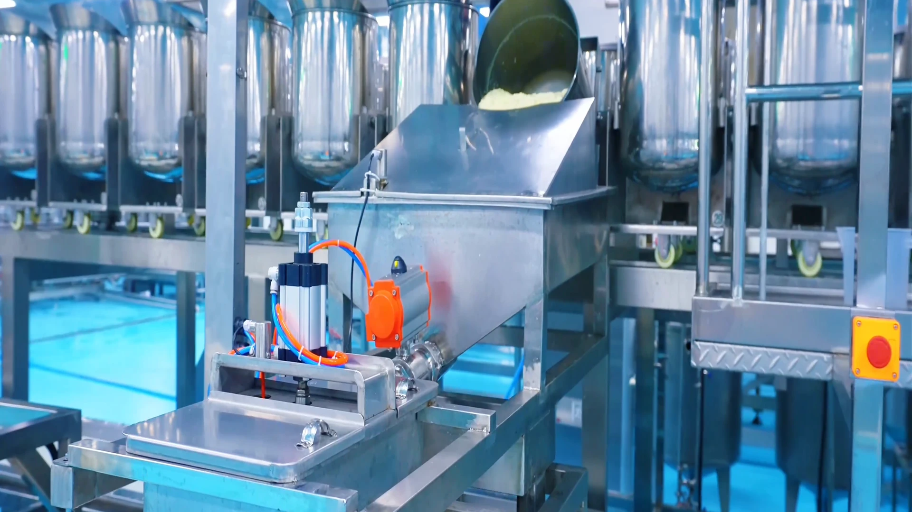
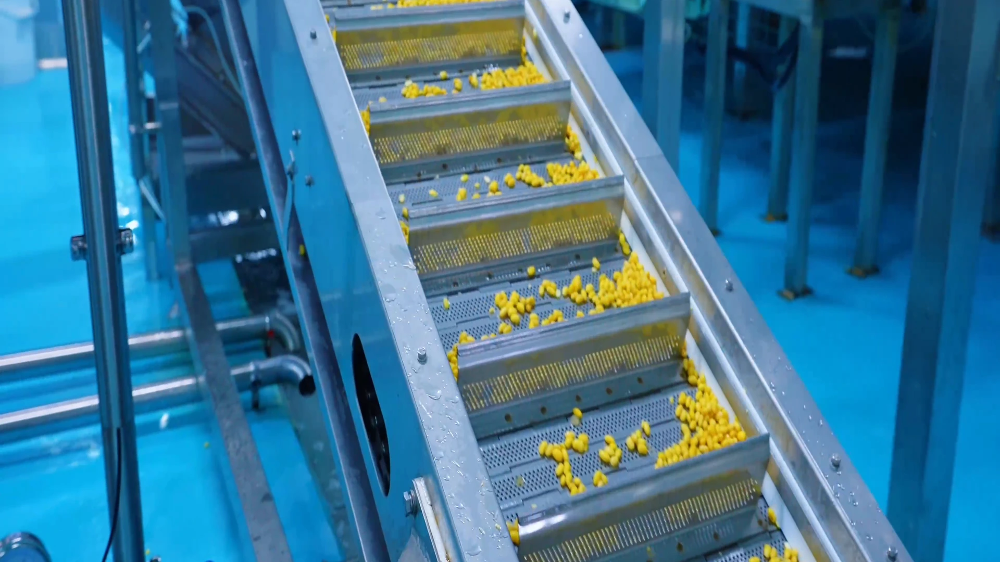
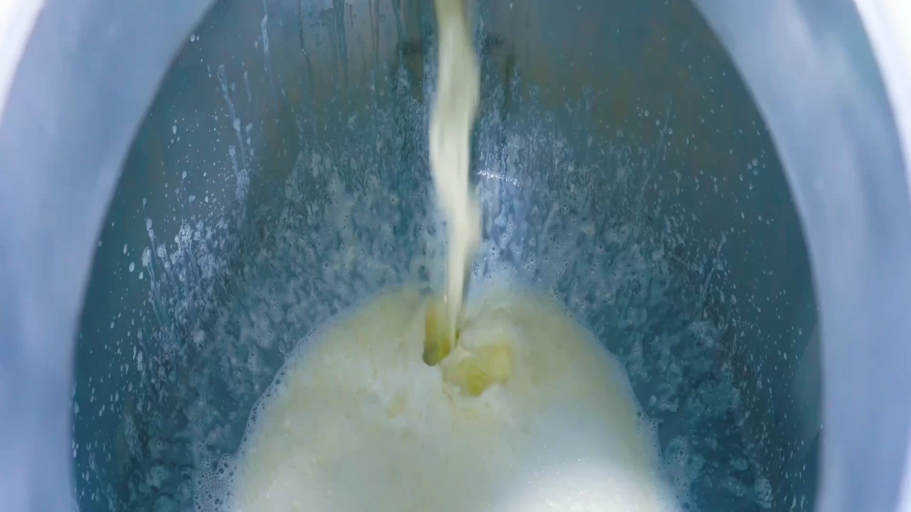
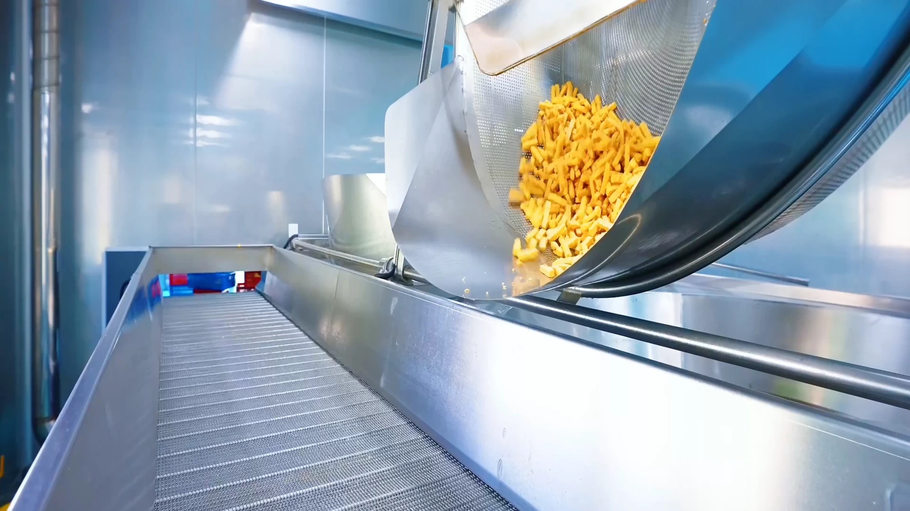

Wählen Sie das Soja aus.
Sorgfältig ausgewählte Sojabohnen beginnen den Prozess. Kontrolliertes Einweichen und Mahlen bilden die Grundlage für ein reines Bohnenaroma und eine glatte Struktur.
Der Prozess
Ein traditioneller chinesischer Schmorbraten trifft auf eine vernetzte Produktionslinie. Die Werkzeuge sind neu, der Respekt vor Geschmack und Konsistenz jedoch nicht.
Die Idee
Guter Tofu beginnt mit guten Sojabohnen und sorgfältiger Handhabung. Ein unvergesslicher geschmorter Tofu beginnt mit Geduld. Wir wählen Sojabohnen aus, kontrollieren das Einweichen, mahlen, formen und braten und geben dem Tofu dann Zeit, den Charakter des Schmorbratens anzunehmen.
Bei diesem Prozess geht es um Textur und Tiefe: Eine oberflächliche Soße kann sofort geschmeckt werden; Ein langsames Schmoren bleibt beim Tofu.

Von der Zutat bis zur Textur
Die Produktionslinie ist präzise. Das endgültige Qualitätsurteil ist menschlich.
Sorgfältig ausgewählte Sojabohnen beginnen den Prozess. Kontrolliertes Einweichen und Mahlen bilden die Grundlage für ein reines Bohnenaroma und eine glatte Struktur.
Formung und Entwässerung werden auf einer LaoZhou Foods-gesteuerten Linie verwaltet, was dazu beiträgt, von Charge zu Charge eine gleichmäßige Tofu-Struktur zu schaffen.
Durch das Frittieren bei hoher Temperatur entsteht die charakteristische Textur der Serie. Langsames Schmoren sorgt dafür, dass Brühe und Gewürze durch den Tofu wandern.

Standardisierte Schritte Führen Sie jedes Stück Tofu mit hoher Brühe, von der Handhabung der Zutaten bis zur versiegelten Verpackung.
Fordern Sie eine Prozessübersicht an
Eine verbundene Linie
Die Handhabung, Verarbeitung, Würze und Verpackung der Zutaten wird über ein vernetztes System koordiniert. Durch die digitale Produktion erhält das Team einen klareren Überblick über jede Phase.
Eine maßvolle, wiederholbare Struktur, die die Textur jedes Sortiments unterstützt.
Mehr Transparenz auf der gesamten Linie, da die Mitarbeiter die Qualität prüfen und für sie sorgen.
Vakuumversiegelung und Wärmebehandlung sorgen für stabile, verzehrfertige Verpackungen.
Qualität, praktisch
Spezifische Anforderungen variieren je nach Produkt und Zielort. Für Ihren Kaufprozess stellt Ihnen unser Team die aktuellen LaoZhou Foods-Dokumente zur Verfügung.
Standardisierte Produktionsschritte und digitale Überwachung tragen dazu bei, dass Textur, Würze und Verpackung konsistent bleiben.
Fordern Sie die aktuellen Zutaten-, Allergen-, Nährwert- und Produktionsunterlagen an, die für Ihren Markt und ausgewählte LaoZhou Foods relevant sind.
Automatisierung verwaltet sich wiederholende Arbeiten. Die Leute überwachen immer noch den Prozess, das Erscheinungsbild der Linie und die fertige Packung.
Ein genauerer Blick



Für ernsthafte Käufer
Fordern Sie die aktuellen Produktunterlagen oder eine Musterauswahl für Ihren Kanal an.